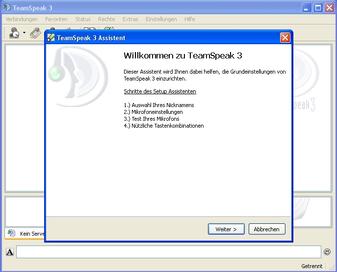
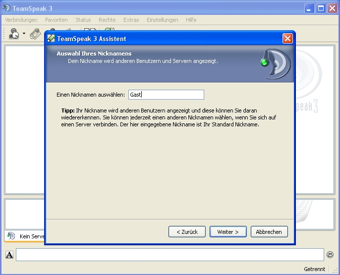
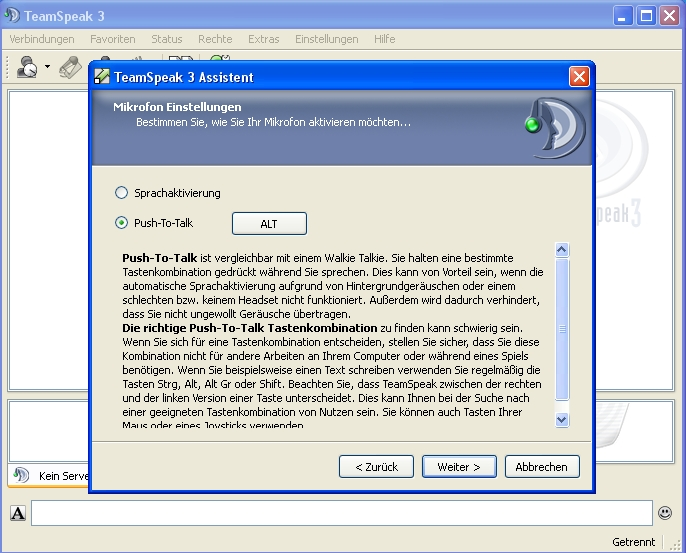

Wenn du nun den Clienten heruntergeladen hast, geht es an die Installation. Wir empfehlen, TeamSpeak 3 mit den Standardeinstellungen zu installieren und nichts an der Installation zu verändern.
Wenn du nun TeamSpeak 3 erfolgreich installiert hast, führe es zuerst einmal aus. Jetzt meldet sich der Konfigurationsassistent von TeamSpeak 3.
Das erste Fenster kannst du mit "Weiter" bestätigen.
Im zweiten Fenster kannst du deinen Nicknamen angeben. Diesen Nicknamen kannst du selbstverständlich jederzeit ändern. Dann bestätigst du per Klick auf "Weiter".
Nun geht es an die Einstellung des Mikrofons. Du hast die Wahl ob man Push-To-Talk aktivieren möchtest oder die Sprachaktivierung. Wir empfehlen letzteres, weil die Sprachaktivierung um einiges bequemer ist. Mit der Sprachaktivierung mussst du nicht ständig irgendeine Taste drücken, um sprechen zu können. Möchtest du jedoch Push-To-Talk verwenden, so kannst du hier eine zugehörige Taste zuweisen. Zur Einstelllung der Empfindlichkeit der Sprachaktivierung klickt du dann auf "Weiter".